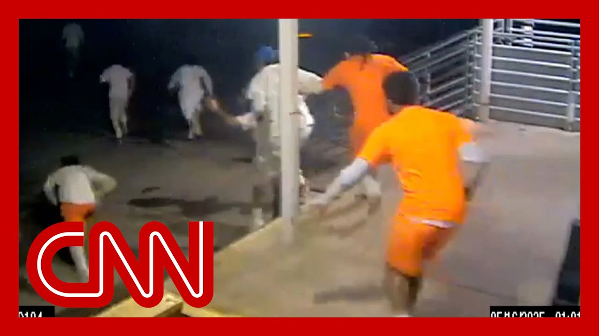

【奥尔良教区警长办公室员工在10名囚犯越狱后被捕】
Summary: Officials in Louisiana have arrested a jail maintenance worker for aiding the escape of 10 inmates, with six still at large, after he allegedly turned off the water under threat, allowing them to breach a cell and flee.
摘要： 路易斯安那州官员逮捕了一名监狱维修工，指控其协助10名囚犯越狱，目前仍有6人在逃。据称，该员工因受到威胁而关闭水源，使囚犯得以破墙逃脱。

⏱️ Estimated Reading Time: 8 min
Officials in Louisiana have made the first arrest following one of the state's largest jailbreaks.
路易斯安那州官员在该州最大规模的越狱事件后首次逮捕了一名嫌疑人。
The state attorney general charging jail maintenance worker Sterling Williams with malfeasance of office and ten counts of simple escape.
州总检察长指控监狱维修工斯特林·威廉姆斯犯有渎职罪和十项协助越狱罪。
That's one count for each of the inmates who got away last week.
每一项指控对应上周逃脱的一名囚犯。
Six escapees are still on the run.
目前仍有六名逃犯在逃。
The AG saying that Williams turned off the water in the cell where the inmates opened a hole, which allowed them to reach a loading dock door.
总检察长称，威廉姆斯关闭了囚犯凿开墙洞的牢房水源，使他们得以抵达装卸码头门。
Video shows them running out of that door and then getting away.
视频显示他们从该门跑出并逃脱。
The attorney general also alleges that Williams failed to immediately alert officials after an inmate allegedly ordered him to shut the water off.
总检察长还指控威廉姆斯在囚犯命令其关闭水源后未立即上报。
CNN's Rafael Romo joins us now with the latest.
CNN的拉斐尔·罗莫将为我们带来最新进展。
And Rafael, according to court documents, Williams says that he was threatened.
拉斐尔，根据法庭文件，威廉姆斯称自己受到了威胁。
They said that they would stab him if he didn't shut the water off.
对方称若他不关闭水源就会捅伤他。
Yeah. That's right.
是的，确实如此。
That appears to be the case based on a legal document we have reviewed in the last hour.
根据我们一小时前查阅的法律文件，情况似乎如此。
Boras say document that may spell out the reason why the man accused of helping the inmates escape might have done so.
博拉斯提到的文件可能解释了被告协助囚犯越狱的原因。
CNN has obtained a copy of Sterling Williams affidavit for arrest warrant, where investigators say that the 33 year old willfully and maliciously assisted with the escape of the ten inmates.
CNN获得了斯特林·威廉姆斯的逮捕令宣誓书，调查人员称这名33岁男子蓄意协助十名囚犯越狱。
But there's another important detail that might explain his motive.
但另一关键细节可能解释其动机。
The affidavit says, in part, that during a morant Mirandized interview with Williams, he explained to agents that he turned the water off from the outside Pipe Walk area under direction of an inmate who threatened to quote shank him if he did not turn the water off.
宣誓书部分内容显示，威廉姆斯在米兰达权利告知后的采访中向探员解释，他是在一名囚犯威胁“捅他”的指令下，从外部管道区关闭了水源。
That inmate was one of the inmates who escaped the opps. So Correctional Center.
该囚犯是OPP惩教中心逃脱者之一。
According to Louisiana Attorney General Liz Mural, Williams was employed as a maintenance worker at the sheriff's office.
据路易斯安那州总检察长利兹·穆拉尔称，威廉姆斯受雇于警长办公室担任维修工。
Attorney General Muriel also said in a statement that Williams admitted to agents that one of the escapees advised them to turn the water off in the cell where the inmates escaped from.
穆拉尔总检察长在声明中还表示，威廉姆斯向探员承认，一名逃犯建议他关闭囚犯逃脱牢房的水源。
Instead of reporting the inmate, this statement says Williams turned the water off as directed, allowing the inmates to carry out their scheme and to successfully escape.
声明称，威廉姆斯未上报该囚犯，而是按指示关闭水源，使囚犯得以实施计划并成功逃脱。
Earlier today, Orleans Parish Sheriff's Sonja Hudson says, Susan, I should say.
今日早些时候，奥尔良教区警长索尼娅·哈德森表示——抱歉，应是苏珊。
Hudson said the investigation into the jailbreak is active and ongoing, adding that she takes full accountability for this failure.
哈德森称越狱调查仍在积极进行，并表示她对此次失职负全责。
There were procedural failures and missed notifications, but there were also intentional wrongdoings.
既存在程序疏漏和通知延误，也存在蓄意不当行为。
This was a coordinated effort, aided by individuals inside our own agency, who made the choice to break the law.
这是一次有内部人员协助的协同行动，这些人选择违法。
One arrest has been made and we are continuing to pursue everyone involved, and that investigation is active and ongoing.
已逮捕一人，我们正继续追查所有涉案人员，调查仍在进行中。
And BR is here. As of, the parish sheriff's office employee comes after a fourth inmate who escaped from the jail Friday was captured on Monday in the New Orleans East neighborhood.
BR报道，继周五越狱的第四名囚犯于周一在新奥尔良东部社区被捕后，现又有一名教区警长办公室员工涉案。
Now back to you. So.
现在交还给您。
So what's your reaction to this employee shutting off the water in the area where the inmates escaped?
您对该员工关闭囚犯逃脱区域水源有何看法？
I mean, they claim this employee that one of the inmates threatened to stab them if they didn't go through with this.
他们声称该员工受到囚犯“不照做就捅人”的威胁。
Well, that's true. It could have happened.
这可能是事实。
But at this point, we have to look at the totality of the escape and everything else that took place.
但目前我们必须纵观越狱全过程及其他关联事件。
Correct. We had this was a planned out event.
没错，这是有预谋的事件。
It was a well orchestrated event.
是精心策划的行动。
So this definitely was just was one individual turning off the water.
因此绝不仅是单人关闭水源那么简单。
It's going to be a very, you know, detailed investigation that's going to have to take place a lot of interviews.
这将需要非常细致的调查和大量问询。
And when we do apprehend these individuals, you know, heavy charges are going to be brought about.
当我们逮捕这些人时，他们将面临重罪指控。
And that's how we're going to be able to extract additional information.
这也是我们获取更多信息的方式。
Who assisted them.
查明还有谁协助了他们。
And in this case, if you have, this, this former worker now, saying that they were threatened, what is the proper protocol for them going to authorities and saying, hey, I've received this threat.
此案中，若这名前员工声称受威胁，其向当局报告“我受到威胁”的正确程序是什么？
I mean, what should he have done if this was to be true?
若属实，他本应怎么做？
What is being alleged? He should immediately, you know, notify the supervisors or if they have an intelligence unit, that space there, then they would have brought about some sort of either punitive segregation, you know, for the individuals that were threatening him.
指控称他应立即上报主管或情报部门，以便对威胁者实施惩戒隔离。
But the fact that he reacted in that manner, he definitely violated protocol.
但他如此行事显然违反规程。
He violated penal law because he basically assisted in the escape one way or the other, even though it was under duress.
即便受胁迫，他的行为实质上协助了越狱，触犯了刑法。
You know, duress is an affirmative defense. He could try that later on in the trial.
胁迫可作为积极抗辩理由，他可在庭审中主张。
But the fact that he did assist, he's got a lot of answering to do for the for his actions.
但他确实提供了协助，必须对行为作出交代。
obviously there are six, inmates that are still on the run.
显然仍有六名囚犯在逃。
What do you think the likelihood is that they're still in the immediate area of New Orleans or potentially in the state of Louisiana?
您认为他们仍在新奥尔良周边或路易斯安那州内的可能性有多大？
You know, it all depends with the community connections at one time, you know, the family members who's close by.
这取决于其社会关系，比如附近是否有亲属。
But remember, anyone that's actually helping them is aiding and abetting, which they're also contribute, you know, to to both the escape and to a criminal act.
但需注意，任何协助者都构成窝藏罪，既助长越狱也涉刑事犯罪。
They could be prosecuted.
这些人可能被起诉。
It's going to go down to, you know, once again, what we do is what we set up perimeters, then we go from there.
我们将再次设立封锁区展开行动。
We do our intelligence gathering, we start tapping phones, we start looking at associates, family members.
通过情报收集、监听电话、排查同伙及亲属。
And that's how we end up, you know, catching most the individuals they go to.
这正是我们最终抓获多数逃犯的方式。
There's only so far they could run without assistance.
没有协助他们逃不了多远。
They're going to need money unless, you know, they had additional resources that they have planned before.
除非事先筹划了额外资源，否则他们需要资金。
You know, it's kind of hard to run.
逃亡并不容易。
Former Sergeant Phillip Rodriguez, thanks so much for joining us.
前警长菲利普·罗德里格斯，感谢您的参与。